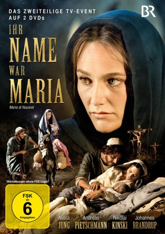

#4931 Ihr Name war Maria
Alternativ: Mary of Nazareth (Englischer Titel)
 
 IMDB-Wertung: 6.5 / 10
IMDB-Wertung: 6.5 / 10  Metascore: 0
Metascore: 0 
Wer war Maria von Nazareth? Dieser grandiose Zweiteiler spiegelt die vielfältigen Facetten der Gottesmutter wider: die junge Frau, die sich in den Zimmermann Joseph verliebt, die Auserwählte, die dazu bestimmt ist, Gottes Sohn zu gebären, die Mutter, die voller Angst vor den grausamen Verfolgungen des Herodes mit Jesus nach Ägypten flieht, die reife Frau, die den erwachsenen Messias ziehen lässt, um die Botschaft des Herrn zu verkündigen und die Leidende, die die Kreuzigung nicht verhindern kann. Geprägt von der Liebe zu Gott und voller Vertrauen auf die Vorsehung übersteht sie alle Bürden und ist auch die Erste, die an die Auferstehung Jesu glaubt. Maria darf hier ihre Gefühle als Mutter und Ehefrau zeigen und steht in Kontrast zu einer anderen weiblichen Person, die ihre Wege immer wieder kreuzt: Maria Magdalena, die alle Vorzüge des luxuriösen Lebens genießt und erst durch die Begegnung mit Jesus ihre wahre Berufung erfährt …
Jahr: 2012
Dauer: 88 Minuten
FSK: 6
Land: Deutschland Studio: BRTonspuren:
Untertitel:
Auflösung: 1080p (1920x1080) Größe: 5591 MB
Genre: Drama, Geschichte, Biographie
Regisseur: Giacomo Campiotti
Drehbuch: Jeff Zimbalist
Soundtrack:
Darsteller:
 Paz Vega als Maria Magdalena
Paz Vega als Maria Magdalena Andreas Pietschmann als Jesus
Andreas Pietschmann als Jesus- Antonia Liskova als Erodiade
- Roberto Citran als Joachim
 Nikolai Kinski als Judas
Nikolai Kinski als Judas Antonella Attili als Anne
Antonella Attili als Anne Robert Stadlober als Hircanus
Robert Stadlober als Hircanus- Marco Gambino als Kaifa
- Raffaele Vannoli als Joseph of Arimathea
- Nejib Belhassen als Philip
- Alissa Jung als Maria
- Thomas Trabacchi als Joazar
- Luca Marinelli als Joseph
- Andrea Giordana als Herod
- Johannes Brandrup als Antipas
- Sergio Múñiz als Antipater
- Mariano Rigillo als Simon
- Marco Messeri als Zacharias
- Teresa Acerbis als Elisabeth
- Marco Rulli als John
- Toni Laudadio als Peter
- Marco Foschi als John the Baptist
 Remo Girone als Pilato
Remo Girone als Pilato- Bahram Aloui als James
- Saber Araki als Andrew
- Ikram Azouz als Jairus
- Alice Bellagamba als Salomé
- Yassine Ben Gamra als Matthias
- Darine Boughzala als Desperate Mother
- Afef Chelbi als Susanna
- Viola Graziosi als Bleeding Woman
- Nisaf Hafsia als Mother of Maddalena
- Mohamed Kouka als Father of Maddalena
- Elettra Dallimore Mallaby als Angel
- Hichem Rostom als Eleazar
- Abdelkader Saïd als Servant of Herod
Datei: X:\2012(G-M)\Ihr Name war Maria Teil 1 (2012, FSK6, 1920x1080).mkv seit 02.12.2016
Festplatte: HD 2012(A-M)
 Es gibt insgesamt 112 Filme in der Gruppe '2012(G-M)'
Es gibt insgesamt 112 Filme in der Gruppe '2012(G-M)'